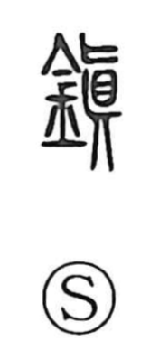

鎮

Uncategorized
Kun: shizumeru, shizumaru | On: chin
to pacify ・ to quell ・ to calm ・ town
Explanation
Originally written 鎭, this is a phono-semantic character with the metal radical and 眞 as its phonetic. In ancient form, 眞 combines the figure of a corpse with an inverted, hanging head, evoking a person struck down by sudden calamity. The fierce anger of such a death was feared, so people placed jade ear-stoppers as offerings within a small shrine and carefully performed chinkon rites to press down and soothe the spirit. From this ritual context the character came to mean pacifying and quelling anger or tumult, growing quiet, and by extension holding things in check.